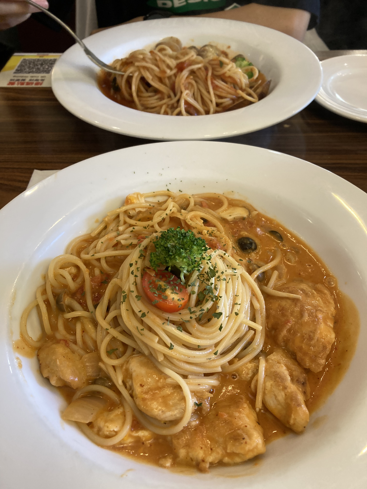

義大利麵
安東尼義式廚房
地址：新北市新莊區中正路514巷39號
營業時間：週一到週日 11:30 - 15:30、17:00 - 20:30
特色：義大利麵份量十足，且餐點美味，提供免費暢飲的飲料機，可以自行裝飲料來喝，是每到用餐時間一定會客滿的人氣餐廳。
古米特 Gourmet Pasta
地址：新北市新莊區中正路514巷47號
營業時間：週一到週五 11:00 - 14:30、16:30 - 21:00，週六到週日11:00-14:30、17:00-21:00
特色：餐點有多樣化選擇，可以選擇義大利麵或燉飯，餐點可以免費加大，有提供免費濃湯及飲料可以自取，整體來說非常優質。